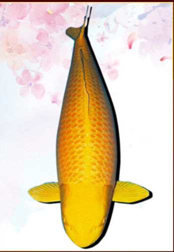
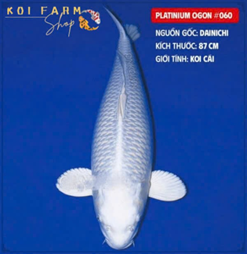
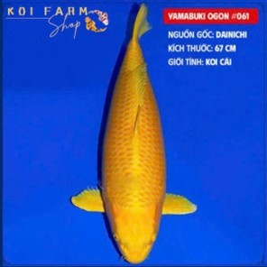
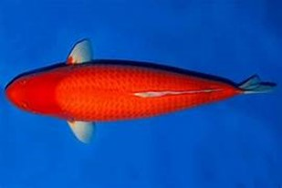
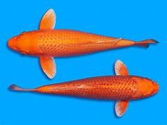
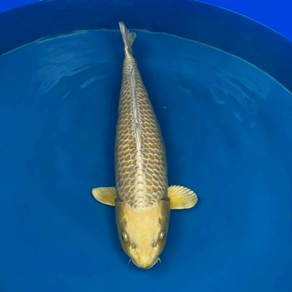

B.Cá koi Ogon
I. Lịch sử
- Các em Koi Ogon gắn liền với lịch sử khai sinh dòng cá Koi, từ 90 năm trước ông Sawata Aoki – Cụ tổ lai tạo các em Koi tại Nhật Bản Bản có ước mơ tạo ra 1 loại cá koi đặc biệt. Khi còn là một thanh niên ông nghe thấy có 1 cậu bé tìm thấy 1 con cá chép hoang dã trong 1 con sông mà trên lưng nó có bão vàng trên đó, ông lặn lội đường xa đến xem và thuyết phục cậu bé bán con cá cho ông.
- Hành trình lai tạo cá của ông bắt đầu, ông nuôi chú cá trong suốt 25 năm, trong thời gian đó ông đã nghiên cứu, canh từng thời điểm chú cá trứng, nhân đàn, hiển nhiên lai tạo, chọn lọc những chú cá đủ sản phẩm chất ông mong muốn. Đến năm 1946 ông đã thành công khi lai tạo được em koi Yamabuki Ogon – Cá koi màu vàng. Đây chính là em koi đầu tiên trong số tất cả các loại Koi Ogon.
II. Ưu điểm của koi Ogon
- Tuổi thọ dài năm nhất lên đến 40 – 45 năm
- Màu sắc đồng nhất phù hợp với bộ lọc vì có thể nhìn thấy màu sắc rõ ràng, làm nổi bật cá màu
- Koi Platinium có sức chịu đựng rất tốt cho môi trường sống khắc nghiệt như băng tuyết, khí hậu đóng băng.
- Koi Ogon được lai tạo với 6 siêu sản phẩm màu sắc khác nhau, cấu trúc cơ thể chắc chắn, khỏe mạnh bao gồm: Platinium Ogon, Yamabuki Ogon, Hi Ogon, Orenji Ogon, Mukashi Ogon.
- Thuộc dòng lai tạo, dễ nuôi, dễ chăm sóc chỉ cần có hồ tiêu chuẩn, biết cách chọn các em Koi đẹp và sẵn sàng thế như chuẩn bị nuôi 1 núm vú của mình ra…
III. Mức độ yêu thích của Koi Ogon hiện nay
- Đây là dòng cá được những người chơi cá Koi cá tính rất ưa chuộng, với ưu điểm kích thước lớn, màu đồng nhất không lỗi, khả năng dãn đàn cực tốt cấu trúc cơ thể rắn chắc, khỏe mạnh nên nhiều em koi Ogon rất Jum bo. Tại Việt Nam các nhà biệt thự, nhà sân vườn với diện tích hồ lớn thì sở hữu 1 đến một vài em Koi Jum bo Ogon dù màu sắc nào cũng quá đỉnh cao tạo điểm nhấn và nổi bật trong đàn koi.
- Dòng Ogon tính tình rất thân thiện, hòa bình, ứng xử nhẹ nhàng, đặc tính đàn tạo sự bình an cho đàn koi, chỉ cần cho các em ấy ăn mỗi ngày vài lần, cùng ngồi ngắm nhìn, các em koi Ogon sẽ lưu hình ảnh của bạn và đối đãi với bạn như những người bạn lâu ngày gặp nhau.
IV. Koi Ogon chia làm 5 loại
1. Em koi Platinium Ogon
- Koi Platinium Ogon thuộc chủ sở hữu Koi Ogon rất phổ biến ở Nhật Bản và số 1 Châu Âu. Tuổi thọ Koi Platinium cao nhất trong dòng Koi Ogon. Thân hình trắng bạc bóng ánh, ngọc ngà, trắng từ vây đến đuôi, tinh khôi, tinh khiết, thanh cao, cảm giác như vị hoàng nhìn quá lâu cũng sẽ làm hỏng mất vẻ đẹp tinh khiết hoàn hảo hoàn hảo.
- Khoa học gọi em là: Cyprinus Carpio
- Tuổi thọ: Khoảng cách 35 – 40 năm
- Sở thích ăn uống: Thuộc loại ăn tạp
- Tầng nước: tầng mặt và tầng đáy
- Điều kiện nước: 16 – 22*C, Độ pH 7.5 – 7.8
- Điều kiện hồ tối thiểu: 2,5m x 1,8m, chiều sâu 0,6m
- Nước: sạch, mặt nước có bóng râm để nước không bốc hơi làm oxy hao hụt, riêng hồ cá koi của em Platinium Ogon có thể trồng lục bình, sen cảnh để nước mát mẻ, có bóng dâm từ trên cao giúp cá tránh nắng buổi trưa.
2. Yamabuki Ogon
- Koi Yamabuki Ogon có màu vàng kim loại duy nhất, là màu sắc rất rõ ràng, nhất quán, KHÔNG CÓ NHƯỢC ĐIỂM. Đây là dòng koi thuộc nhóm Hikari Muji – cá koi 1 màu. Hiện các nhà lai tạo Nhật Bản biến thể Koi Yamabuki Ogon thành Gin Rin Yamabuki Ogon và Doistu Yamabuki Ogon.
- Kích thước hồ cá Koi tiêu chuẩn cho em Koi Yamabuki Ogon: tối thiểu 2 khối nước 200x100x100 tối đa không giới hạn….
1000 Gallon tương đương gần 4.000 m3.
- Yêu cầu chăm sóc: Đơn giản
- Tính cách của em Koi này: Thân thiện, hòa bình
- Tiêu chuẩn nước: KH 2-12, pH 6,8-7,2
- Kích thước tối đa của em koi Yamabuki: 100 cm
- Màu sắc: Vàng thống nhất
- Sở thích ăn uống: Ăn tạp
- Tuổi thọ: 35 năm, tuy nhiên có em Koi Yamabuki Ogon kém hơn hoặc cao hơn. Chênh lệch 5 – 10 năm.
3. Em Koi Hi Ogon
Nếu chưa có kinh nghiệm khá dễ nhầm lẫn với em Koi Orenji Ogon vì em Koi Hi Ogon cũng có màu đỏ nhưng màu đỏ củ Hi Ogon là đỏ rực như ớt chỉ thiên, đỏ đậm, phần đầu cá luôn có màu đỏ ớt rất đậm, đậm hơn phần thân của em ấy.
-Phần vây, lưng, đuôi của em Koi Hi Ogon màu đỏ tụ thành bông, tỏa thành các tia, màu tắng bao diềm ngoài của vây.
4. Em Koi Orenji Ogon
Em koi Orenji Ogon này khá phổ biến, nhiều người chơi, thân cá chỉ có màu cam, xả rồng, phần củng cố và củng cố của Orenji Ogon cũng có ít màu trắng như tuyết Yamabuki Ogon Koi, tuy nhiên phần vây Cung cấp của Orenji Ogon không pha màu trắng như Yamabuki Ogon.
Mukashi Ogon và nezu Ogon Koi
Em Koi Mukashi Ogon và nezu Ogon Koi 1 loại có màu xám bạc và 1 loại đen tuyền, nhưng để ý tại phần đỉnh đầu, sống chậm của 2 em đều có 1 vệt trắng nổi bật (không toàn thân như Karasugoi). Riêng em koi Mukashi không khẳng định 100% là màu xám bạc, tại phần cuối vây, củng cố, mũi của em đều có thêm màu vàng nhạt. Vị trí các thiết kế của em cũng có màu vàng tạo thành 1 viền bên ngoài thiết kế.
